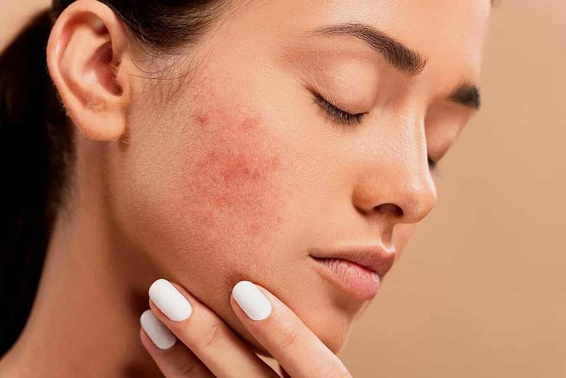

What Reflex Points Are Targeted for Acne Treatment? A Holistic Approach

Introduction
Acne is one of the most common skin concerns, affecting millions worldwide. Whether caused by hormonal imbalances, stress, diet, or environmental factors, acne can be frustrating and challenging to manage. While conventional treatments such as topical creams, medications, and lifestyle adjustments help control breakouts, many individuals seek alternative therapies to complement their skincare routines.
One such holistic approach is reflexology, an ancient practice that stimulates specific reflex points on the body to promote overall well-being. Reflexology aims to improve circulation, detoxification, and hormonal balance, all of which are essential for clearer skin. In this article, we explore the key reflex points targeted for acne treatment and how they contribute to skin health.
Understanding Reflexology and Acne Connection
Reflexology is based on the principle that different reflex points on the feet, hands, and face correspond to specific organs and systems within the body. By stimulating these points, reflexologists believe they can enhance circulation, reduce stress, support detoxification, and balance hormones—factors that play a crucial role in acne development.
Acne often results from an overproduction of sebum, clogged pores, bacterial overgrowth, and inflammation. Additionally, hormonal fluctuations, stress, and digestive health contribute to breakouts. Reflexology may help by addressing these underlying causes through targeted pressure on specific reflex zones.
Key Reflex Points for Acne Treatment
- Facial Reflexology Points for Acne
Facial reflexology is particularly effective for acne because the face itself contains reflex zones that directly correspond to internal organs and body systems. Here are some key facial reflex points that may help with acne:
- Forehead: Linked to the digestive system and bladder, massaging this area may aid in detoxification and reducing toxin buildup in the skin.
- Cheeks: Connected to the lungs and respiratory system, stimulating this area may help improve oxygen flow and skin health.
- Chin and Jawline: Associated with hormonal balance and reproductive organs, reflexology on this area may help reduce hormonal acne.
- Temples and Side of the Face: Linked to the liver and gallbladder, stimulating this area may promote toxin elimination and reduce inflammation.
- Foot Reflexology Points for Acne
Foot reflexology is a popular method for stimulating internal organs that influence skin health. Here are the primary foot reflex points targeted for acne relief:
- Liver (Arch of the Foot): The liver plays a significant role in detoxification. Stimulating this area may help clear toxins that contribute to breakouts.
- Kidneys (Middle of the Sole): The kidneys regulate hydration and waste elimination. Massaging this reflex point may support clear, hydrated skin.
- Adrenal Glands (Top of the Arch): Adrenal glands produce stress hormones like cortisol, which can trigger acne. Reflexology here may help reduce stress-related breakouts.
- Intestines and Stomach (Lower Sole and Heel): Gut health is closely linked to skin health. Stimulating digestive reflex points may improve digestion and reduce acne caused by poor gut health.
- Lymphatic System (Edge of the Foot): The lymphatic system aids in toxin removal. Reflexology on this point may help cleanse the skin from within.
- Hand Reflexology Points for Acne
Hand reflexology is convenient and effective for promoting skin clarity. The hands contain reflex points corresponding to major organs influencing acne:
- Liver Reflex (Below the Thumb on the Palm): Helps detoxify the body and prevent toxin buildup in the skin.
- Lungs Reflex (Middle of the Palm): Improves oxygenation and circulation for healthier skin.
- Adrenal Glands Reflex (Base of the Thumb): Helps regulate stress and hormonal balance, preventing stress-induced acne.
- Digestive System Reflex (Below the Fingers on the Palm): Supports gut health and nutrient absorption for clearer skin.
How Reflexology Helps with Acne Treatment
Reflexology provides several benefits that can help individuals struggling with acne. Here’s how it works:
- Enhances Circulation
Improved blood circulation ensures that oxygen and nutrients reach the skin while flushing out toxins. Reflexology stimulates circulation, promoting a healthier complexion.
- Supports Detoxification
The body naturally eliminates toxins through the liver, kidneys, and lymphatic system. By targeting reflex points related to these organs, reflexology may enhance detoxification and reduce breakouts.
- Balances Hormones
Hormonal fluctuations are a major cause of acne, especially around the chin and jawline. Reflexology helps regulate hormones by stimulating reflex points connected to the endocrine system.
- Reduces Stress Levels
Stress can exacerbate acne by increasing cortisol levels, which leads to excessive oil production. Reflexology induces relaxation and reduces stress, preventing stress-related breakouts.
- Improves Digestion and Gut Health
Poor digestion can lead to inflammation and acne flare-ups. Reflexology aids digestion by stimulating reflex points corresponding to the stomach and intestines.
Reflexology Techniques for Acne Treatment
If you want to integrate reflexology into your skincare routine, here are some effective techniques:
- Self-Massage for Facial Reflexology
- Use gentle circular motions on the forehead, cheeks, and jawline.
- Apply light pressure to the temples and chin to stimulate detoxification and hormone balance.
- Use a jade roller or gua sha tool for enhanced benefits.
- Foot Reflexology Routine
- Apply firm pressure to the liver and kidney reflex points.
- Massage the arch of your foot to stimulate digestion and detoxification.
- Focus on the adrenal gland reflex point to reduce stress-related acne.
- Hand Reflexology for Convenience
- Press and massage the liver reflex point below the thumb.
- Apply pressure to the lung reflex area in the center of the palm.
- Gently massage the adrenal gland reflex point at the base of the thumb.
Scientific Evidence Supporting Reflexology for Acne
Although direct studies on reflexology for acne are limited, research shows that reflexology effectively reduces stress, improves circulation, and supports detoxification—factors that contribute to clearer skin.
A study published in the Journal of Alternative and Complementary Medicine found that reflexology significantly reduced stress and anxiety levels, which are common acne triggers. Additionally, research in the International Journal of Dermatology highlights the connection between gut health and acne, suggesting that reflexology targeting digestive organs may indirectly benefit skin health.
While reflexology should not replace conventional acne treatments, it can be a valuable complementary therapy.
Integrating Reflexology into Your Skincare Routine
To maximize results, combine reflexology with other healthy skincare habits:
- Maintain a balanced diet rich in anti-inflammatory foods.
- Stay hydrated to flush out toxins.
- Use non-comedogenic skincare products.
- Practice mindfulness and stress-reducing techniques like yoga or meditation.
- Get regular reflexology sessions or practice self-reflexology daily.
Conclusion
Reflexology offers a holistic, non-invasive approach to acne management by targeting specific reflex points that influence detoxification, circulation, and hormonal balance. While it is not a standalone cure for acne, integrating reflexology into your skincare routine may help improve skin clarity over time.
For best results, consult a certified reflexologist or practice self-reflexology consistently. By embracing reflexology alongside a healthy lifestyle, you may achieve clearer, healthier skin naturally.